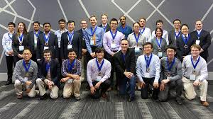
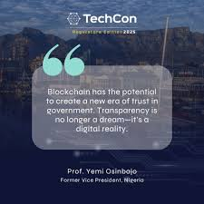
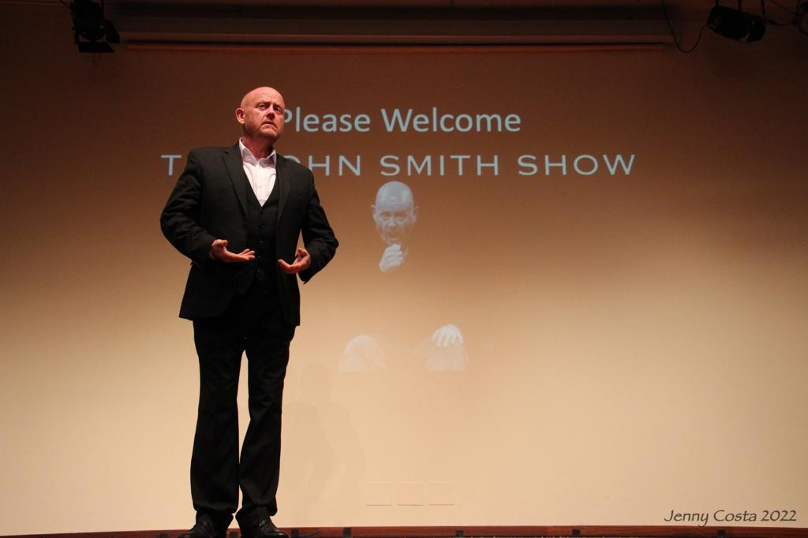
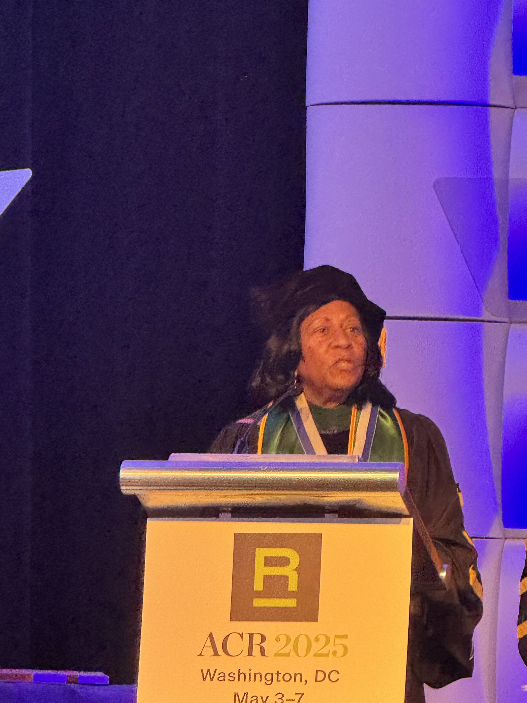

History of TechCon
TechCon began in 2010 as a small gathering of local developers and has grown into one of the largest technology conferences in Africa. Over the years, TechCon has hosted thousands of attendees, featured cutting-edge innovations, and provided a platform for tech leaders to share their knowledge and insights.
Mission & Vision
The mission of TechCon is to inspire innovation, foster learning, and build a strong tech community. We aim to connect developers, entrepreneurs, and thought leaders to shape the future of technology through collaboration and shared knowledge.
Notable Past Speakers
Jane Doe – AI Researcher

Jane Doe is a leading AI researcher and advocate for ethical AI. She spoke at TechCon 2023 about the future of artificial intelligence and its impact on society.
John Smith – Cloud Architect
John Smith is a senior cloud architect at Google Cloud. He shared insights on scalable cloud systems and modern DevOps practices at TechCon 2022.
Dr. Amina Farooq – Cybersecurity Expert
Dr. Amina Farooq is a renowned cybersecurity expert. She delivered a powerful keynote at TechCon 2021 on securing digital infrastructure in a post-pandemic world.